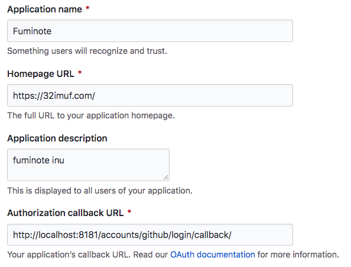

django.contrib.auth: 認証システム
説明
Djangoの認証は、認証機能と権限機能の両方を共に提供しています。そして、一般的に、これらの機能を合わせて認証システムと呼びます。
ユーザー登録/ユーザー情報変更とかはない感じ
テンプレートは用意されていないので、使用したいビューのテンプレートを自分で作る
-
設定ディレクトリの
urls.pyにdjango.contrib.auth.urlsの include を追加すると、 以下の URL パターンが設定されるhttps://docs.djangoproject.com/ja/2.2/topics/auth/default/#module-django.contrib.auth.views
# これを追加すると、↓が全部使える!! しゅごい! urlpatterns = [ path('accounts/', include('django.contrib.auth.urls')), ]
機能
URL パターン
ビュー
フォーム
ログイン
accounts/login/ [name='login']
LoginView
AuthenticationForm
ログアウト
accounts/logout/ [name='logout']
LogoutView
-
パスワード変更
accounts/password_change/ [name='password_change']
PasswordChangeView
PasswordChangeForm
パスワード変更完了
accounts/password_change/done/ [name='password_change_done']
PasswordChangeDoneView
-
パスワード再設定 メール送信
accounts/password_reset/ [name='password_reset']
PasswordResetView
PasswordResetForm
パスワード再設定 メール送信完了
accounts/password_reset/done/ [name='password_reset_done']
PasswordResetDoneView
-
パスワード再設定
accounts/reset/<uidb64>/<token>/ [name='password_reset_confirm']
PasswordResetConfirmView
SetPasswordForm
パスワード再設定 完了
accounts/reset/done/ [name='password_reset_complete']
PasswordResetCompleteView
-
django-allauth
概要
Django 認証システムにもっと便利になるやつを追加できる
主な機能
ログイン
ログアウト
パスワード変更
パスワード再設定
ユーザー登録
ユーザー登録時にメールを送信して登録確認
メールアドレスとパスワードでログイン
ログイン失敗回数制限
-
ソーシャル連携認証
テンプレートも用意してくれている
GitHub とソーシャル連携してみる
https://django-allauth.readthedocs.io/en/latest/providers.html#github
-
https://github.com/settings/developers >
OAuth Apps>Register a new OAuth applicationで値を登録e.g.
-
Authorization callback URL: サービスプロバイダが認可コードを返した後に Web アプリ側にリダイレクトするための URL
django-allauth を使う場合はこの値がサービスプロバイダによって異なる
サービスプロバイダごとに異なるビュー関数が用意されているため
設定値は後から Update できるよ
-
-
登録できたら
Client IDとClient Secretを書き留めておく- Client ID
-
e19df88ba3b567180252
- Client Secret
-
e68ba4640f182b7ef5739fe2600bedb03b00c100
-
Django アプリを起動
# django-allauth をインストールする $ pip3 install django-allauth # Django アプリを起動する $ python3 manage.py migrate $ python3 manage.py createsuperuser $ python3 manage.py runserver 0.0.0.0:8181 * http://localhost:8181/admin/ へログイン * http://localhost:8181/admin/sites/site/ にレコードが1件あることを確認 * http://localhost:8181/admin/socialaccount/socialapp/ に GitHub で登録した ``Client ID`` と ``Client Secret`` を設定
-
動作確認する
admin サイトからログアウト
GitHub もログアウト
-
GitHub リンク押下


-
ログインできた
今今 callback URL がエラーになる => たぶんメールを設定していないせい?っぽい?
あとでやってみる

-
http://localhost:8181/accounts/social/connections/ でソーシャル連携解除できる

-
settings
settings.py""" Django settings for fufu project. Generated by 'django-admin startproject' using Django 2.2.7. For more information on this file, see https://docs.djangoproject.com/en/2.2/topics/settings/ For the full list of settings and their values, see https://docs.djangoproject.com/en/2.2/ref/settings/ """ import os # Build paths inside the project like this: os.path.join(BASE_DIR, ...) BASE_DIR = os.path.dirname(os.path.dirname(os.path.abspath(__file__))) # Quick-start development settings - unsuitable for production # See https://docs.djangoproject.com/en/2.2/howto/deployment/checklist/ # SECURITY WARNING: keep the secret key used in production secret! SECRET_KEY = 'o=uce-pwytvkyjsg8vv12#5zvh765-w!ph==vxs#_(^nw(in$=' # SECURITY WARNING: don't run with debug turned on in production! DEBUG = True ALLOWED_HOSTS = ['*'] # Application definition INSTALLED_APPS = [ 'django.contrib.admin', 'django.contrib.auth', 'django.contrib.contenttypes', 'django.contrib.sessions', 'django.contrib.messages', 'django.contrib.staticfiles', # django-allauth ###### 'django.contrib.sites', # django-allauth では sites フレームワーク必須 'allauth', 'allauth.account', 'allauth.socialaccount', 'allauth.socialaccount.providers.github', # GitHub とソーシャル連携 ] MIDDLEWARE = [ 'django.middleware.security.SecurityMiddleware', 'django.contrib.sessions.middleware.SessionMiddleware', 'django.middleware.common.CommonMiddleware', 'django.middleware.csrf.CsrfViewMiddleware', 'django.contrib.auth.middleware.AuthenticationMiddleware', 'django.contrib.messages.middleware.MessageMiddleware', 'django.middleware.clickjacking.XFrameOptionsMiddleware', ] ROOT_URLCONF = 'fufu.urls' TEMPLATES = [ { 'BACKEND': 'django.template.backends.django.DjangoTemplates', 'DIRS': [os.path.join(BASE_DIR, 'templates')] , 'APP_DIRS': True, 'OPTIONS': { 'context_processors': [ 'django.template.context_processors.debug', 'django.template.context_processors.request', 'django.contrib.auth.context_processors.auth', 'django.contrib.messages.context_processors.messages', ], }, }, ] WSGI_APPLICATION = 'fufu.wsgi.application' # Database # https://docs.djangoproject.com/en/2.2/ref/settings/#databases DATABASES = { 'default': { 'ENGINE': 'django.db.backends.sqlite3', 'NAME': os.path.join(BASE_DIR, 'db.sqlite3'), } } # Password validation # https://docs.djangoproject.com/en/2.2/ref/settings/#auth-password-validators AUTH_PASSWORD_VALIDATORS = [ { 'NAME': 'django.contrib.auth.password_validation.UserAttributeSimilarityValidator', }, { 'NAME': 'django.contrib.auth.password_validation.MinimumLengthValidator', }, { 'NAME': 'django.contrib.auth.password_validation.CommonPasswordValidator', }, { 'NAME': 'django.contrib.auth.password_validation.NumericPasswordValidator', }, ] # Internationalization # https://docs.djangoproject.com/en/2.2/topics/i18n/ LANGUAGE_CODE = 'ja' TIME_ZONE = 'Asia/Tokyo' USE_I18N = True USE_L10N = True USE_TZ = True # Static files (CSS, JavaScript, Images) # https://docs.djangoproject.com/en/2.2/howto/static-files/ STATIC_URL = '/static/' ################## # Authentication # ################## # メールアドレスとパスワードで認証 AUTHENTICATION_BACKENDS = ( # デフォルト, これを残しておくと管理画面はユーザー名/パスワードで認証できる 'django.contrib.auth.backends.ModelBackend', 'allauth.account.auth_backends.AuthenticationBackend', # 追加 ) # 認証⽅式を 「メールアドレスとパスワード」 に変更 ACCOUNT_AUTHENTICATION_METHOD = 'email' # ユーザー名は使⽤しない ACCOUNT_USERNAME_REQUIRED = False SITE_ID = 1 LOGIN_REDIRECT_URL = 'home' ACCOUNT_LOGOUT_REDIRECT_URL = '/accounts/login/' # ログアウトリンクログアウトさせたい場合 True # (デフォルトはログアウト画面経由で POST リクエスト) ACCOUNT_LOGOUT_ON_GET = True # ユーザー登録時にメールアドレス確認を行う ACCOUNT_EMAIL_VARIFICATION = 'mandatory' # ユーザー登録時にメールアドレス確認を行わない # ACCOUNT_EMAIL_VARIFICATION = 'none' # ユーザー登録画面でにEmailを必須項目にする ACCOUNT_EMAIL_REQUIRED = True